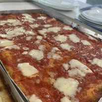
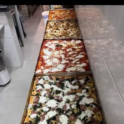

Pizza in teglia
Soffice, fragrante e preparata ogni giorno in diverse varianti.

AUTENTICA TRADIZIONE NAPOLETANA A LAS GALLETAS
Pizza in teglia, pizza fritta, pizzette di rosticceria, pane cafone, cucina napoletana e buffet preparati ogni giorno.
LA NOSTRA IDENTITÀ
El Capricho è una rosticceria autentica dove pizza, fritti, cucina e pane raccontano la tradizione napoletana con lavorazione artigianale e produzione quotidiana.
IL MONDO DI EL CAPRICHO

Soffice, fragrante e preparata ogni giorno in diverse varianti.

Dorata e saporita, come nella tradizione napoletana.

Le classiche pizzette tonde napoletane.

Frittatine, crocchè, montanare e mozzarella in carrozza.


Primi, secondi e contorni secondo la produzione del giorno.

Composizioni personalizzate per feste ed eventi.
Caffè, taralli, freselle, friarielli e conserve.

SPECIALITÀ DELLA CASA
Crosta croccante, mollica soffice e autentico profumo di casa.
Scopri la pagina dedicata →BUFFET ED EVENTI
Pizza in teglia, pizzette, fritti, panini e specialità da forno per compleanni, feste private ed eventi aziendali.



VIENI A TROVARCI
Rosticceria Napoletana
Avenida Fernando Salazar González 13A
38630 Las Galletas, Tenerife